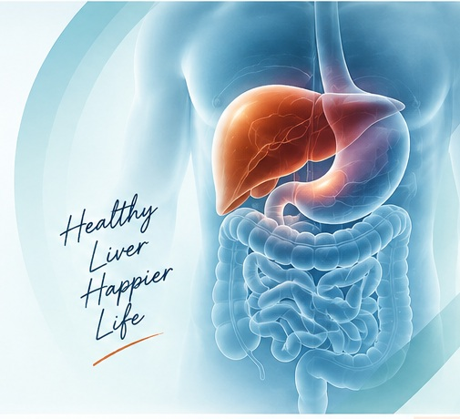

Fatty Liver Disease
Evaluation of fatty liver, metabolic risk factors and fibrosis risk when clinically indicated.
Know more →पेट, लिवर और पाचन संबंधी समस्याओं के लिए परामर्श
Specialist care for the liver, stomach, gut, pancreas, intestines, gallbladder and appendix, with endoscopy and other digestive procedures at AGLEC, Agra.
OPD: 10 AM–8 PM · Monday–Saturday
Sunday OPD closed
IPD: Available 24 hours, every day
Consultant Gastroenterologist
MBBS · MD Internal Medicine
DM Medical Gastroenterology (Gold Medalist), KGMU
The liver is central to overall health. AGLEC provides structured assessment and long-term care for fatty liver, viral hepatitis, jaundice, cirrhosis and abnormal liver tests, with a specialist gastroenterology perspective.
Evaluation of fatty liver, metabolic risk factors and fibrosis risk when clinically indicated.
Know more →Testing, diagnosis, treatment planning and long-term monitoring of viral hepatitis.
Know more →Assessment of chronic liver disease, cirrhosis and complications requiring structured follow-up.
Consult →Specialist evaluation of persistent abnormal liver tests and suspected autoimmune liver disease.
Consult →Endoscopy, colonoscopy, sigmoidoscopy, balloon endoscopy (balloon-assisted enteroscopy) and ERCP are offered according to clinical need. Discuss the appropriate procedure, preparation and follow-up with Dr. Krishna Kohli.

Consultation, treatment planning and follow-up for liver, stomach, gut, pancreas, intestinal, gallbladder and appendix concerns, alongside diagnostic and therapeutic endoscopy.
Assessment and treatment of acidity, reflux, abdominal discomfort, bloating and other digestive concerns.
View consultation detailsCare for fatty liver, hepatitis, jaundice, cirrhosis and abnormal liver function tests.
View consultation detailsUpper GI endoscopy, colonoscopy and diagnostic or therapeutic procedures when clinically indicated.
View consultation detailsLower-bowel assessment with sigmoidoscopy and small-intestine evaluation with balloon-assisted enteroscopy.
View consultation detailsAssessment, treatment planning and follow-up for pancreatitis and other pancreatic concerns.
View consultation detailsCare for IBS, IBD, constipation, chronic diarrhoea and other small- or large-intestine concerns.
View consultation detailsEvaluation of gallbladder and bile-duct concerns, report review and treatment planning, with referral when indicated.
View consultation detailsAssessment of appendix-related concerns and guidance on further treatment or surgical referral when needed.
View consultation detailsReview of investigations, medicines and ongoing treatment, with a plan for continued care.
View consultation detailsDM Medical Gastroenterology Gold Medalist with postgraduate training in Internal Medicine and a clinical focus spanning gastroenterology, hepatology and advanced endoscopy.
At AGLEC, consultation brings your symptoms, medical history and reports together. Dr. Kohli discusses appropriate investigations, explains the next steps and plans follow-up according to your needs.
Answers to common questions about digestive symptoms, liver reports and endoscopy preparation.
Why fatty liver on ultrasound is only the start of risk assessment.
Read article →When recurrent symptoms deserve more than repeated self-medication.
Read article →What upper GI endoscopy examines and how preparation works.
Read article →Why prevention and appropriate testing matter even without symptoms.
Read article →Objective criteria that matter more than promotional “best doctor” claims.
Read article →Common reasons why visible blood deserves proper assessment.
Read article →Yes. Liver care is a major focus area, including fatty liver, viral hepatitis, jaundice, chronic liver disease, cirrhosis and abnormal liver function tests.
Services include upper GI endoscopy, colonoscopy, sigmoidoscopy, balloon endoscopy (balloon-assisted enteroscopy) and ERCP. The doctor advises the appropriate procedure after assessment; contact reception for preparation and availability.
Rather than relying on a “best” claim, assess recognised specialist qualifications, registration, relevant experience, communication and availability of appropriate investigations or endoscopy.
Persistent abnormal liver tests, fatty liver with metabolic risk factors, hepatitis, jaundice or concern for chronic liver disease may justify specialist evaluation.
Speak to reception about a consultation with Dr. Krishna Kohli. An enquiry is confirmed only after the clinic agrees a time with you.
Main phone / WhatsApp: 9927005959. Alternate phone: 9762772430.
Radha Rani Complex, near Bhagat Halwai,
opposite Axis Bank, Kargil Petrol Pump, Agra
OPD: 10 AM–8 PM · Monday–Saturday
Sunday OPD closed
IPD: Available 24 hours, every day
Call reception to confirm your OPD appointment.